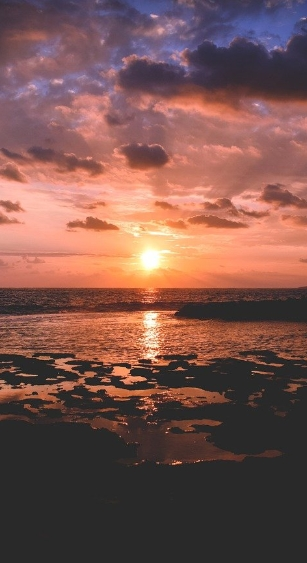

SANTORINI
- 
-

- 환율
- 1EUR
- 1,477.16원
- 추천
- 5월 ~ 10월
- 언어
- 그리스어
- 비자
- 90일
- 무비자
- 항공
- 경유
- 14시간
- 전압
- 50 Hz
- 230 V
산토리니에서 가장 유명한 일몰 명소로, 아름다운 하얀 건물과 협곡이 어우러진 절경을 자랑하는 마을.
일몰 감상, 마을 산책, 전통 그리스 레스토랑에서의 디너
산토리니 북서쪽에 위치한 절벽 마을.

산토리니의 수도 피라에서 항구까지 연결되는 케이블카로, 칼데라의 절경을 감상할 수 있는 로맨틱한 교통수단.
케이블카 탑승, 피라 마을의 카페에서 커피 즐기기.
피라 마을 중심부에서 출발.
"황혼의 마을"로 불리며, 고급스러운 레스토랑과 호텔이 위치한 조용하고 평온한 마을.
칼데라 전망을 감상하며 석양 디너, 마을 산책.
피라에서 북쪽으로 약 2km에 위치한 마을.
검은 모래 해변으로 유명하며, 해변가의 바와 레스토랑이 즐비한 휴양지.
해변에서의 휴식, 바에서의 칵테일, 해변가 산책.
산토리니 동쪽에 위치한 해변.
고대 미노아 문명의 유적지로, 잘 보존된 고대 도시를 탐방할 수 있는 역사적인 장소.
유적지 투어, 고대 그리스 역사 탐방, 가이드 투어
산토리니 남서쪽의 아크로티리 지역에 위치.
부산광역시 해운대구 모험로 123
(우편번호 48095)
123-45-67890
평일 10:00 ~ 18:00 / 주말 및 공휴일 제외
buuu0708@gmail.com
1234-123-1234
051-000-0000